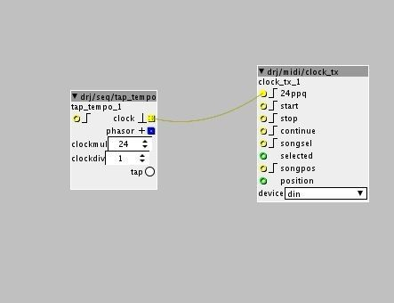

I also tried that, with limited succes.
I send clock from Kp3 to Axoloti and then to G2..... But it seems like G2 only receives a start signal and doesnt follow clock tempo... And when I stop clock again, G2 doesnt stop playing.

I also tried that, with limited succes.
I send clock from Kp3 to Axoloti and then to G2..... But it seems like G2 only receives a start signal and doesnt follow clock tempo... And when I stop clock again, G2 doesnt stop playing.
"midi/out/clock" is a clock master, it does not slave to incoming midi clock.
To "forward" incoming midi clock from to another output, the only solution that 'd work currently is a modified version of this script http://community.axoloti.com/t/axoloti-as-a-midi-usb-host/290/8
it needs to be modified to ignore midi cc, notes bend etc, and only forward midi clock messages. Don't have time to make this modification myself currently...
I really need something like this as wel (jack_transport/midi-clock -> axoloti ->-> devices on usb-host and din-out).
Something like this for the script?
if (dev == MIDI_DEVICE_USB_DEVICE) {
uint8_t status_type = status & 0xF0;
if (status_type == MIDI_MTC) {
MidiSend3(MIDI_DEVICE_DIN,0,status,data1,data2);
MidiSend3(MIDI_DEVICE_USB_HOST,0,status,data1,data2);
}
}Hah, completely different:
if (dev == MIDI_DEVICE_USB_DEVICE) {
if ((status == MIDI_TIMING_CLOCK) ||
(status == MIDI_START) ||
(status == MIDI_CONTINUE) ||
(status == MIDI_STOP)) {
MidiSend1(MIDI_DEVICE_DIN,0,status);
}
}Haven't gotten it to work on USB_HOST though.
And the answer is:
MidiSend1(MIDI_DEVICE_USB_HOST,1,status);Apparently this is because the virtual-cable naming starts at 1 (with later '- 1' for correction).
(thnx to a friend who figured this out from the usbh_midi code)
@dreamer
Did this work? If that's the case could you be so kind to share the modified object here? I would need it for the same reason, sending clock synth from daw to external gear through axoloti. Would be nice, thx!
I think this one
I need to send my clock from laptop (usb conncection) to the din out. But I a have totally no clue on how to change objects or whatsoever so If you got this to work I would highly appreciate If you could upload the custom object 
You just place a 'script' object and enter the code in my copy/paste.
This code is then executed when you run the patch (no need to connect the in/outlets or anything).
essentially, my midithru object (in 1.0.9) basically does the same as these scripts, but isn't hardcoded for device in and out (i.e. you select) ..
so if this works, it would make sense for me to add this too....
so Id be interested to know if you find it useful, and also if there are any issues/limitations.
also, is the latency introduced 'acceptable'?
also, seem this thru functionality is pretty useful, perhaps I should move my thru object to factory...
also I wonder if I should add some options, e.g. to limit what messages get sent thru.
(e.g. notes only, notes + clock .... I'm thinking some checkboxes to say which you want)
what do you think @johannes... shall I put midithru into the factory library? , perhaps with a few more options for selecting message types....
Well as your description says it excludes the clock signal (which in my case and I think @Blindsmyth is wat we need).
My understanding is that the Axoloti midi-code still needs a lot of work. Ie. in the usb-midi-spec you should also be able to set multiple devices. (ie. expose the host or din-ports as unique usb-devices) and as well known sysex is currently not possible.
So, I applaud any effort to expand midi-functionality in this regard
that was my point... I was offering to add it... and wanted to check to see if the approach had worked ok.
(i.e. no point in me adding it, if it didnt work very we'll, e.g. unacceptable latency  )
)
Im not quite sure I understand what you mean there...
we only currently allow one 'connection' for each type... device, din and usb host.
the limitations i see are only in the host implementations and are:
a) we don't support USB hubs... so that means its obviously impossible to connect multiple usb midi devices.
b) we don't expose the name of the device/port connected.... rather just call it usb_host , port 1, usb_host port 2.
usb hub, is probably quite a lot of work, but definitely on the 'wish list'.
as for the usb mid spec exposing multiple devices, yes, it does this via what Ive called 'ports' but in the spec are referred to as cables. (up to 15, I only show 4... to keep it simple). I used this for Push and also a 2 cable usb to DIN cable I have.
I added these connection/ports to all midi output objects, originally I added them to the input as well, but johannes correctly pointed out, this could lead to user confusion if they were set incorrectly and also really cluttered the patcher, so I moved the connection/port filtering to the subpatch level, this kind of makes sense, as its where we tend to put voices. (for polyphony)
or do you mean something else?
sysex output , is actually 'supported' but only in the C api, and its unlikely to change since producing sysex in the patcher would be cumbersome, especially without allocating large buffers. there are some limitations on the 'speed' this can be sent, so that again we dont have to allocate an enormous buffer.
(i.e. it works for normal sysex, but wont probably work for downloading samples etc to device)
sysex input, again, we could add to the input side in C, but process in the patcher is probably not realistic, the problem is, potentially the incoming data could be enormous, too big for us to realistically reserve space for.. what makes it worst, is you dont know how many bytes are expected... so you have to process byte by byte, which is why I think its only realistic to do this in C, and not the patcher.
I guess initially Id like to have support for small control type sysex messages... as these are pretty common.
(also better support for NRPN/RPN would be cool, though you can actually process these already with cc and 14 bit cc objects)
Well I'd say please add it!
Seems to work fine so far (haven't done extensive testing though).
A friend has started to document MIDI on this wiki: https://nurdspace.nl/MIDI
(as the official MIDI-spec is not online but only available as a giant book typically bought by vendors)
He was quite critical of the MIDI implementation of Axoloti btw
(but not too interested in working on it himself unfortunately ..)
For my use case I need to be in control of what exactly I'm passing through, e.g. midi clock through but only certain CCs, no notes for example. So using one object that lets everything through would make no sense for me personally.
I would rather be interested in having a midi clock out object with patcher inlets for 24ppq and 4ppq, like the opposite of the midi in object, with the option to send either to din or host. That way one could build clock divider like patches. Or generally speaking make it part of the whole modular experience, be more flexible in where to grab a midi clock pulse, what to do with it, where to send it.
Considering the code:
Now it won't work anymore, I fist tried with the script oneliner, worked well syncing my volca beats,
now I get this error:
/Users/Simon/Documents/axoloti/build/xpatch.cpp:54:45: error: 'status' was not declared in this scope
if (dev == MIDI_DEVICE_USB_DEVICE) { if ((status == MIDI_TIMING_CLOCK) || (status == MIDI_START) || (status == MIDI_CONTINUE) || (status == MIDI_STOP)) { MidiSend1(MIDI_DEVICE_DIN,0,status); } };
^
I'm sorry I'm a total noob with this script thing, am I using the right object?
Hello,
Thank for the tips,
Do you know what mean " if (dev == MIDI_DEVICE_USB_DEVICE) " ?
I need to send Midi timing clock from axoloti clock to DIN. I should use something else, right ?
Okey, i find the drj/midi/clock_tx object to send midi, for midi out clock
work perfect
!
Hey. I am interested in this thread as I am also trying to pass midi clock from usb host thru to the midi din output. @Blindsmyth - Sorry for my n00bness, do I use 'script/script' or 'midi/in/script' or something else to insert your code?
UPDATE- too easy...
The end game is to use my Teenage Engineering OP-1 as a midi host for my MPC. So now i'll make a few juicy effect patches to tweak on the MTM.
Loving my axoloti and this community! Thanks all...
Just my 2 cents: I also needed that feature to sync a korg sq1 that doesnt have din midi in, only usb midi. I didn't manage to get a stable clock, much to my dismay. I used the a773 aswell as the above mentioned drj objects. too bad!!
small update: I found that the issue for the out of sync clock was probably the Sram being near full.
My patch has a 60% DSP Load, but I can't add a single object without sram overflow, so i think its coming from there.
{kind=link}